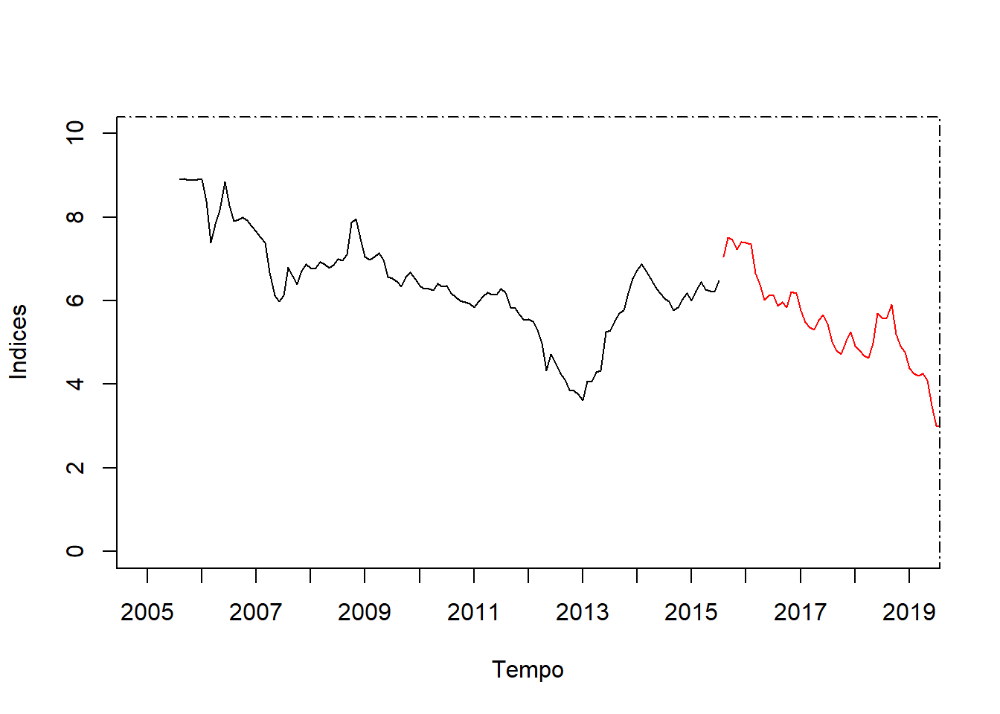
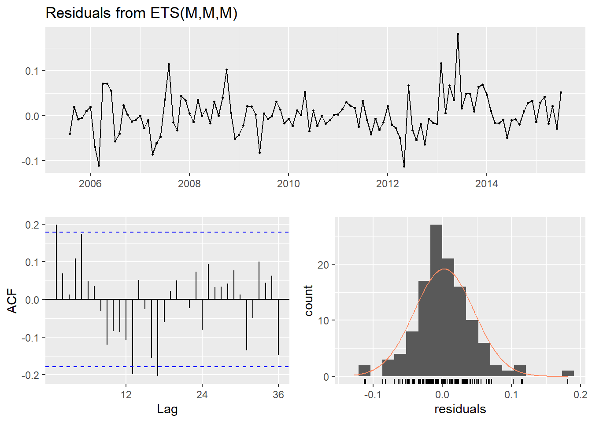
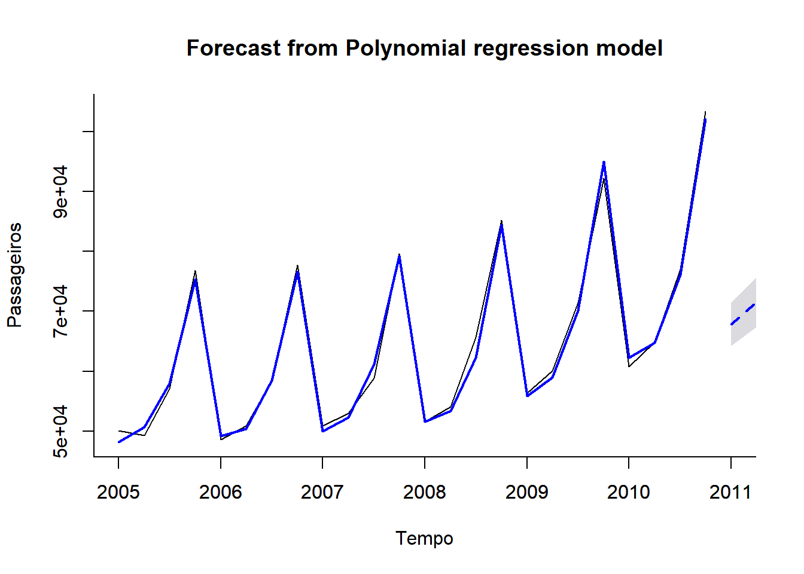

Analisar séries temporais são úteis para verificar padrões e criar previsões de movimentos futuros. Baseado na base de dados alvo de nossa análise, iremos transformá-la em um dataset de série temporal e na sequência criar as bases de treino e teste.
Carregamos a base de dados alvo, previamente tratada durante os passos explicados na fase de Data Preparation (preparação de dados).
Utilizamos a função customizada GetTimeSeriesDateParameters para gerar todas as datas que serão utilizadas na análise de séries temporais para a base alvo de estudo. Nesta função, passamos o percentual para proporção desejada entre a base de treino e teste.
target_data <- readRDS('../data/processed/target_dataset.rds')
parameters <- GetTimeSeriesDateParameters(target_data$date, 0.7)
print(parameters)## $start
## [1] 2005 8
##
## $end
## [1] 2019 10
##
## $start_year
## [1] 2005
##
## $end_year
## [1] 2019
##
## $train_start
## [1] 2005 8
##
## $train_end
## [1] 2015 7
##
## $test_start
## [1] 2015 8
##
## $test_end
## [1] 2019 10
##
## $test_sample_size
## [1] 51A função ts vai converter um vetor de valores de uma base de dados em um objeto R de séries temporais. Devemos passar para a função a coluna alvo e os valores de data de início e fim do período de observação bem como sua frequência.
target_ts <- ts(target_data$taxa_venda,
start = parameters$start,
end = parameters$end,
frequency = 12)
summary(target_ts)## Min. 1st Qu. Median Mean 3rd Qu. Max.
## 2.703 5.468 6.174 6.106 6.825 8.923Quando vamos criar um modelo de previsão de séries temporais o ideal é separar os dados em duas partes:
O tamanho do conjunto de testes é normalmente cerca de 30% da amostra total, embora esse percentual dependa do tamanho da amostra que você tenha e também quanto tempo adiante você deseja fazer a previsão. A base de testes deve ser idealmente pelo menos tão grande quanto o horizonte máximo de previsão necessário.
Diferente de outros métodos de previsões, como classificações e regressões sem a influência do tempo, em séries temporais não podemos dividir os dados de treino e teste com amostras aleatórias de qualquer parte dos dados, deve-se seguir o critério temporal da série, onde os dados de treino devem vir antes dos dados de teste.
# creating train and test sets ------------------------------------------------
GenerateTrainTestDatasets(target_ts,
parameters$train_start,
parameters$train_end,
parameters$test_start,
parameters$test_end)
test_sample_size = parameters$test_sample_size
train_ts <- readRDS('../data/processed/train_ts.rds')
test_ts <- readRDS('../data/processed/test_ts.rds')A seguir vemos o plot dos datasets de treino e teste.
# plot of the training and testing temporal series
plot(train_ts,
xlab = "Tempo",
ylab = "Indices",
xaxt = "n",
xlim = c(parameters$start_year, parameters$end_year),
ylim = c(0, 10),
bty = "l")
axis(1, at = seq(parameters$start_year, parameters$end_year, 1),
labels = format(seq(parameters$start_year, parameters$end_year, 1)))
lines(test_ts, bty = "l", col = "red")
box(lty = '1373', col = 'black')
Para executarmos o modelo Naive de séries temporais, utilizamos a função GenerateNaiveTimeSeriesModel criada para rodar este modelo, gravando os resultados no diretório do projeto \models para uso futuro.
Uma vez executada, a função retorna um preview com os resultados de MAPE para o modelo, mostrados a seguir.
| Model | MAPE |
|---|---|
| ts_naive_model | 31.09829 |
Para executarmos todos os modelos lineares de séries temporais, utilizamos a função GenerateLinearTimeSeriesModels criada para rodar cada um dos modelos desejados, gravando os resultados no diretório do projeto \models para uso futuro.
Uma vez executada, a função retorna um preview com os resultados de MAPE para cada um dos modelos, mostrados a seguir.
| Model | MAPE |
|---|---|
| ts_linear_model_trend | 20.50659 |
| ts_linear_model_trend_square | 51.48280 |
| ts_linear_model_season | 29.84223 |
| ts_linear_model_trend_season | 20.43880 |
| ts_linear_model_trend_square_season | 51.39168 |
Para executarmos o modelo Moving Average (MA) de séries temporais, utilizamos a função GenerateMovingAverageTimeSeriesModel criada para rodar este modelo, gravando os resultados no diretório do projeto \models para uso futuro.
ma_consolidation <- GenerateMovingAverageTimeSeriesModel(target_ts,
train_ts,
test_ts,
test_sample_size,
parameters$start_year,
parameters$end_year)Uma vez executada, a função retorna um preview com os resultados de MAPE para o modelo, mostrados a seguir.
| Model | MAPE |
|---|---|
| ts_moving_average_model | 26.08568 |
Para executarmos todos os modelos de suavização exponencial de séries temporais, utilizamos a função GenerateExponentialsmoothingStateTimeSeriesModel criada para rodar cada um dos modelos desejados, gravando os resultados no diretório do projeto \models para uso futuro.
smoothing_consolidation <- GenerateExponentialsmoothingStateTimeSeriesModel(target_ts,
train_ts,
test_ts,
test_sample_size)Uma vez executada, a função retorna um preview com os resultados de MAPE para cada um dos modelos, mostrados a seguir.
| Model | MAPE |
|---|---|
| ts_exponential_smoothing_model_ANN | 31.09789 |
| ts_exponential_smoothing_model_AAN | 30.92538 |
| ts_exponential_smoothing_model_ANA | 29.97268 |
| ts_exponential_smoothing_model_AAA | 31.07335 |
| ts_exponential_smoothing_model_MNN | 31.09789 |
| ts_exponential_smoothing_model_MAN | 30.01436 |
| ts_exponential_smoothing_model_MMN | 33.82173 |
| ts_exponential_smoothing_model_MNM | 28.57836 |
| ts_exponential_smoothing_model_MAM | 29.31366 |
| ts_exponential_smoothing_model_MMM | 17.05277 |
| ts_exponential_smoothing_model_MNA | 29.79502 |
| ts_exponential_smoothing_model_MAA | 33.57409 |
| ts_exponential_smoothing_model_ZZZ | 31.09789 |
Para análise inicial dos modelos será utilizado como base a métrica MAPE (Mean Absolute Percentage Error, ou Erro Percentual Médio Absoluto).
Essa métrica é interessante de ser usada, geralmente em relatórios gerenciais, pois o erro é medido em termos percentuais e pode-se comparar o erro percentual do modelo de um produto X com o erro percentual de um produto Y.
O cálculo dessa métrica pega o valor absoluto do erro dividido pelo preço real e posteriormente é calculada a média:
\[MAPE = \frac{1}{n} \sum_{d_i} (\frac{1}{q} \sum_{t_j}\left\lvert{\frac{gap_{i,j}-s_{i,j}}{gap_{i,j}}}\right\rvert)\]
Para analisar o desempenho dos modelos utilizados em nosso dataset de série temporal, vamos primeiramente classificar do melhor para o pior, baseado no resultado de MAPE.
mape_ranking <- rbind(naive_consolidation,
linear_consolidation,
ma_consolidation,
smoothing_consolidation) %>%
arrange(MAPE) %>%
mutate(Rank_ID = row_number())
mape_ranking <- mape_ranking[c(3,1,2)]
kable(mape_ranking)| Rank_ID | Model | MAPE |
|---|---|---|
| 1 | ts_exponential_smoothing_model_MMM | 17.05277 |
| 2 | ts_linear_model_trend_season | 20.43880 |
| 3 | ts_linear_model_trend | 20.50659 |
| 4 | ts_moving_average_model | 26.08568 |
| 5 | ts_exponential_smoothing_model_MNM | 28.57836 |
| 6 | ts_exponential_smoothing_model_MAM | 29.31366 |
| 7 | ts_exponential_smoothing_model_MNA | 29.79502 |
| 8 | ts_linear_model_season | 29.84223 |
| 9 | ts_exponential_smoothing_model_ANA | 29.97268 |
| 10 | ts_exponential_smoothing_model_MAN | 30.01436 |
| 11 | ts_exponential_smoothing_model_AAN | 30.92538 |
| 12 | ts_exponential_smoothing_model_AAA | 31.07335 |
| 13 | ts_exponential_smoothing_model_ANN | 31.09789 |
| 14 | ts_exponential_smoothing_model_ZZZ | 31.09789 |
| 15 | ts_exponential_smoothing_model_MNN | 31.09789 |
| 16 | ts_naive_model | 31.09829 |
| 17 | ts_exponential_smoothing_model_MAA | 33.57409 |
| 18 | ts_exponential_smoothing_model_MMN | 33.82173 |
| 19 | ts_linear_model_trend_square_season | 51.39168 |
| 20 | ts_linear_model_trend_square | 51.48280 |
O modelo ts_exponential_smoothing_model_MMM demonstrou a melhor métrica de MAPE, com o valor de 17.0527736.
Para analisarmos com mais detalhes o modelo com melhor performance, vamos carregar o objeto salvo anteriormente com todos os resultados do modelo.
## ETS(M,M,M)
##
## Call:
## ets(y = train_ts, model = method)
##
## Smoothing parameters:
## alpha = 0.9999
## beta = 0.0012
## gamma = 1e-04
##
## Initial states:
## l = 9.2849
## b = 0.9953
## s = 1.0032 1.0082 0.9782 0.9986 1.0034 1.0078
## 0.9922 1.0052 1.0092 0.9995 0.9913 1.0031
##
## sigma: 0.0464
##
## AIC AICc BIC
## 295.6226 301.6226 343.0100
##
## Training set error measures:
## ME RMSE MAE MPE MAPE MASE
## Training set 0.006804592 0.2680829 0.1976282 0.08271809 3.129914 0.2192935
## ACF1
## Training set 0.2047014
##
## Ljung-Box test
##
## data: Residuals from ETS(M,M,M)
## Q* = 34.878, df = 8, p-value = 2.815e-05
##
## Model df: 16. Total lags used: 24##
## Forecast method: ETS(M,M,M)
##
## Model Information:
## ETS(M,M,M)
##
## Call:
## ets(y = train_ts, model = method)
##
## Smoothing parameters:
## alpha = 0.9999
## beta = 0.0012
## gamma = 1e-04
##
## Initial states:
## l = 9.2849
## b = 0.9953
## s = 1.0032 1.0082 0.9782 0.9986 1.0034 1.0078
## 0.9922 1.0052 1.0092 0.9995 0.9913 1.0031
##
## sigma: 0.0464
##
## AIC AICc BIC
## 295.6226 301.6226 343.0100
##
## Error measures:
## ME RMSE MAE MPE MAPE MASE
## Training set 0.006804592 0.2680829 0.1976282 0.08271809 3.129914 0.2192935
## ACF1
## Training set 0.2047014
##
## Forecasts:
## Point Forecast Lo 95 Hi 95
## Aug 2015 6.453022 5.862883 7.039611
## Sep 2015 6.349240 5.554711 7.170201
## Oct 2015 6.374592 5.377006 7.412108
## Nov 2015 6.408624 5.261702 7.638964
## Dec 2015 6.355417 5.114891 7.698533
## Jan 2016 6.246203 4.918681 7.696690
## Feb 2016 6.317315 4.893925 7.911336
## Mar 2016 6.262768 4.717297 7.997357
## Apr 2016 6.205689 4.608310 8.080612
## May 2016 6.052440 4.422179 7.979135
## Jun 2016 6.211387 4.460101 8.265078
## Jul 2016 6.154310 4.336947 8.279086
## Aug 2016 6.127165 4.266390 8.359199
## Sep 2016 6.028624 4.121532 8.345400
## Oct 2016 6.052696 4.101408 8.428113
## Nov 2016 6.085010 4.063277 8.564089
## Dec 2016 6.034490 3.997463 8.553727
## Jan 2017 5.930790 3.869239 8.490078
## Feb 2017 5.998312 3.888027 8.678947
## Mar 2017 5.946519 3.830276 8.650153
## Apr 2017 5.892322 3.750255 8.713517
## May 2017 5.746812 3.603563 8.604163
## Jun 2017 5.897732 3.671570 8.811651
## Jul 2017 5.843538 3.581614 8.840572
## Aug 2017 5.817764 3.511104 8.877968
## Sep 2017 5.724199 3.438952 8.810058
## Oct 2017 5.747054 3.423633 8.962922
## Nov 2017 5.777737 3.427847 9.052428
## Dec 2017 5.729768 3.348618 8.988730
## Jan 2018 5.631305 3.264731 8.891572
## Feb 2018 5.695416 3.244329 9.010822
## Mar 2018 5.646239 3.195368 9.062481
## Apr 2018 5.594779 3.135161 9.129825
## May 2018 5.456617 3.014783 9.003015
## Jun 2018 5.599916 3.066650 9.332860
## Jul 2018 5.548458 3.022684 9.186622
## Aug 2018 5.523986 2.987438 9.245793
## Sep 2018 5.435145 2.902131 9.163599
## Oct 2018 5.456847 2.889935 9.137472
## Nov 2018 5.485980 2.858231 9.346413
## Dec 2018 5.440433 2.827235 9.459951
## Jan 2019 5.346942 2.744890 9.273166
## Feb 2019 5.407817 2.732754 9.429921
## Mar 2019 5.361123 2.683679 9.366407
## Apr 2019 5.312261 2.638843 9.373326
## May 2019 5.181076 2.537484 9.141988
## Jun 2019 5.317139 2.572529 9.435518
## Jul 2019 5.268279 2.546884 9.460593
## Aug 2019 5.245042 2.509721 9.552740
## Sep 2019 5.160688 2.445739 9.469098
## Oct 2019 5.181294 2.430645 9.608281## ME RMSE MAE MPE MAPE
## Training set 0.006804592 0.2680829 0.1976282 0.08271809 3.129914
## Test set -0.406870620 0.9581838 0.7377318 -12.40913825 17.052774
## MASE ACF1 Theil's U
## Training set 0.2192935 0.2047014 NA
## Test set 0.8186069 0.8740580 4.453102plot(best_model$model_final_projected,
xlab = "Tempo",
ylab = "Indice",
bty = "l",
xlim = c(parameters$start_year, parameters$end_year),
ylim = c(0, 10),
flty = 2,
main = "Forecast from Polynomial regression model")
axis(1, at=seq(parameters$start_year, parameters$end_year, 1),
labels=format(seq(parameters$start_year, parameters$end_year, 1)))
lines(best_model$model_final_projected$fitted, lwd=2, col="blue")